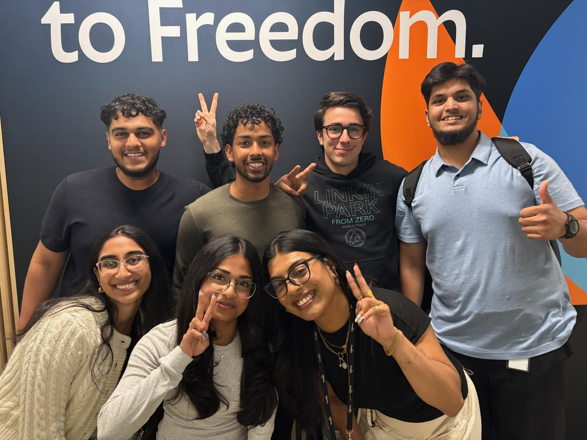
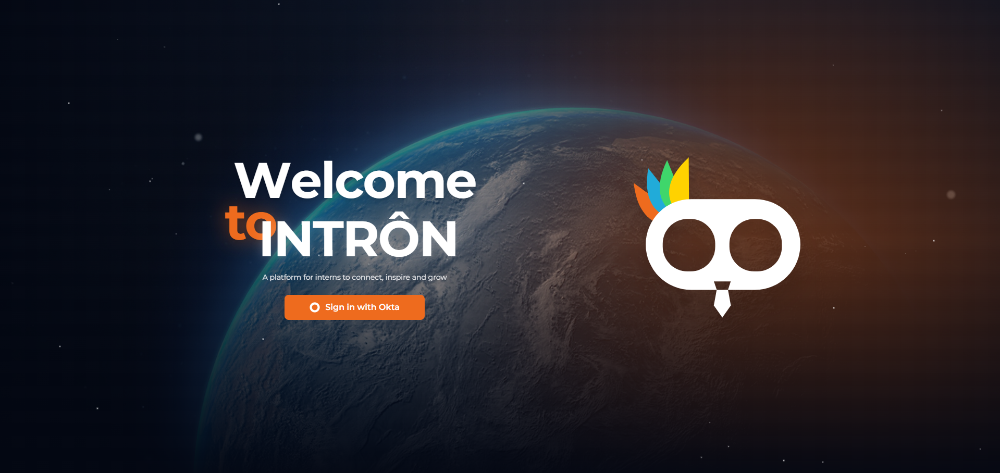
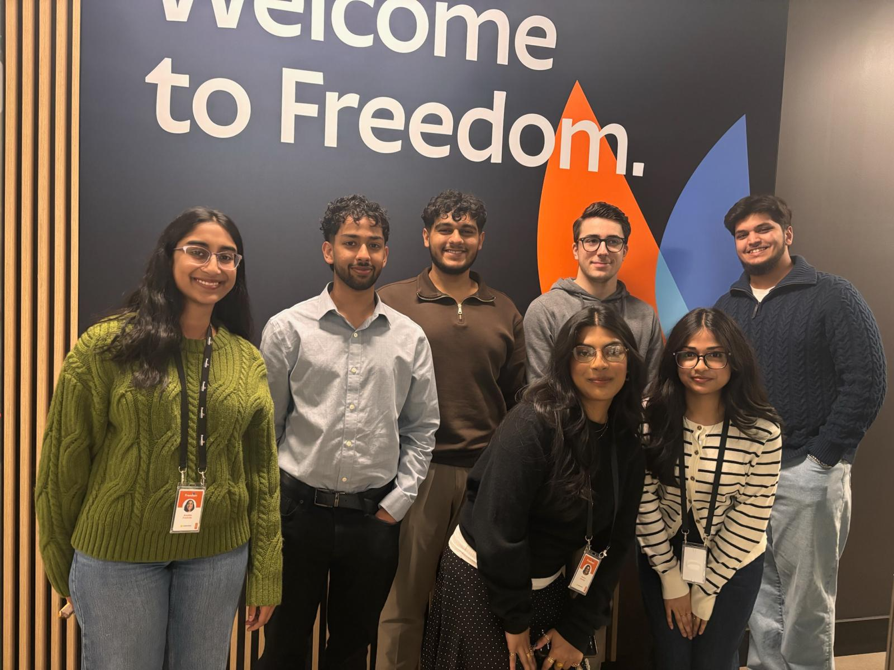
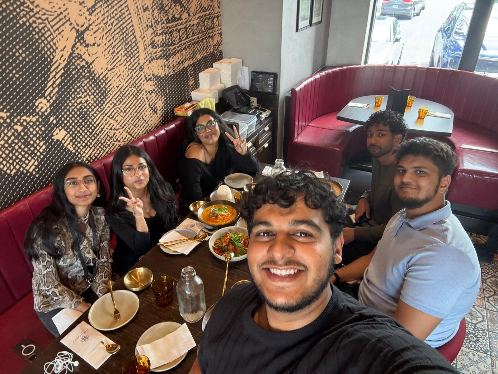
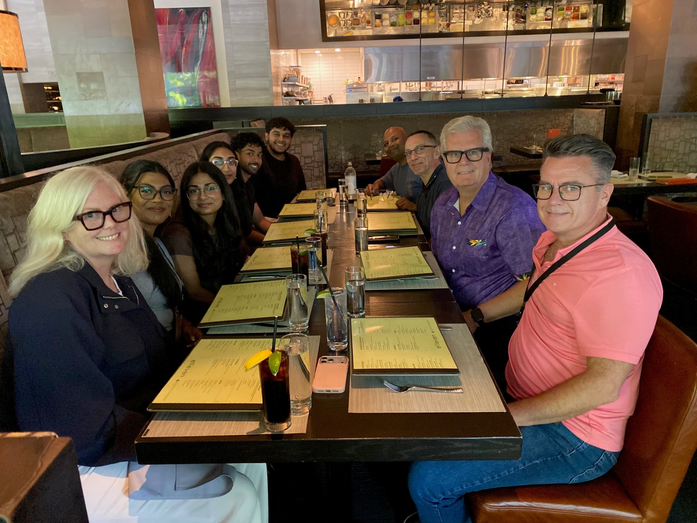

University of Guelph · Work term 01 · May–September 2026
A summer at
Freedom Mobile.
My first software engineering internship: building Intron with fellow interns and contributing to Videotron’s Web Evolution team.
Read my work-term report
Introduction
My first software engineering internship gave me the opportunity to see how the things we learn in school fit into a real development team. During Summer 2026, I worked at Freedom Mobile, contributed to the Web Evolution team supporting Videotron, and worked with fellow interns to build Intron.
These were two different parts of the experience. With Web Evolution, I worked within existing systems and development processes. With Intron, my fellow interns and I helped build an application from the ground up. Together, they gave me a better understanding of how software is developed, how different parts of an application connect, and how much communication goes into getting a project moving. The biggest takeaway for me was realizing how different software development feels when the code has to fit into an existing organization, architecture, and team.
Where I worked
Freedom Mobile and Videotron operate within the Canadian telecommunications industry, where software supports customer-facing digital experiences, internal platforms, and the systems behind modern telecom services. My placement brought me into a telecom software environment spanning Freedom Mobile and Videotron. Within the Web Evolution team, the work involved frontend development, bugs, features and modernization of existing web systems. It was an opportunity to see how a development squad works with requirements, reviews and delivery schedules beyond a university project.
Alongside that work, the intern project gave us a problem closer to our own experience: how to make information and processes easier to manage for interns and the people supporting them.
Intron: building something for the intern experience

What we set out to build
My fellow interns and I built Intron, an internal platform designed to bring the intern program into one place. Information that had been spread across spreadsheets, SharePoint and inboxes could be organized through a shared application, with separate intern and administrator experiences.
The project covered intern profiles, onboarding, milestones, feedback, one-to-one records, co-op paperwork and shared resources. We worked across the frontend, backend, authentication and AI-assisted features, taking the application from an initial idea through implementation and an end-to-end demonstration. We also worked on how the interfaces would be used on desktop and mobile screens.
That scope made the project about more than individual features. We had to think about what interns needed to find, what administrators needed to manage, and how those experiences connected to the same underlying information.
How we built it
Our intern team’s frontend used Next.js, TypeScript and Tailwind. The backend used NestJS, TypeORM and PostgreSQL, with Okta connected to the existing identity environment for sign-in. The wider project also included Podman Compose and separate Python/FastAPI services for AI-assisted features, including document parsing and advice tagging.
These technologies describe our intern team’s application. Different interns contributed to different parts, and the final result depended on that collaboration. My own work included frontend and backend contributions, with a particular focus on authentication alongside Yahyaa Yasin.
The authentication challenge
One of the most involved parts of my work was helping integrate the application with the company’s existing sign-in environment. We moved from direct credential handling toward a redirect-based Okta sign-in flow. We also needed to make sure that signing in connected users to the right permissions inside the application.
This pushed me to look beyond one screen or endpoint. The frontend, backend and identity service had to work together. It gave me a practical reason to understand the flow as a whole, rather than only the piece I was working on at that moment.
Making the process easier for people
The intended value of Intron was to make the intern program easier to navigate and support. Interns could have a shared place for information and resources, while administrators could organize onboarding, feedback and records without having to piece everything together from separate sources.
Keeping advice and useful work across cohorts was another part of the idea. Each new group could build on what earlier interns had learned. Bringing feedback and records together was also intended to make information easier to review when discussing an intern’s progress.
These were the benefits we designed toward. By the end of the term, the platform had been demonstrated end-to-end, with cloud hosting discussed as the next step toward broader internal use.
Feedback and the final demonstration
We had recurring touchpoints with Heather, Mario and Craig, with other people joining depending on the work being discussed. We used those sessions to show progress, talk through architecture and work through blockers.
Our final demonstration was to Pierre Cadieux. We presented the platform end-to-end, including the intern and admin experiences, authentication and the team’s AI-assisted document handling. The next step discussed was moving the application to cloud hosting so the work could be presented more widely.
Web Evolution and migration automation
My work with the Web Evolution team gave me experience contributing to an existing enterprise environment. I worked through Jira tickets involving frontend functionality, bugs and features, while gaining exposure to modernization and migration work.
One contribution was a tool using Playwright to compare links between production and staging pages and help validate work associated with a Drupal migration. The purpose was to support checking the migrated experience, rather than relying entirely on manual comparison.
Working on this gave me another way to approach a software problem: sometimes the useful thing to build is a tool that helps the team check its work. It connected development with the practical needs of people maintaining and moving an existing system.
My learning goals and reflections
1. Technological literacy
My first goal was to build practical experience with modern full-stack tools and enterprise development workflows. I wanted to understand how an application was structured and become more confident contributing to it.
Intron gave me an opportunity to work with connected frontend and backend components, while the authentication work helped me understand how an application fits into an existing enterprise environment. Web Evolution exposed me to an established squad’s workflow, where development involved requirements, tickets, feedback and coordination with other people.
Looking back, I made progress toward this goal through practical contributions. I would not describe every technology in my original plan as something I mastered. The more useful outcome was developing a clearer understanding of how the pieces fit together and how to approach unfamiliar parts of a project. I want to keep building depth in backend development, databases and application architecture in future work.
2. Problem solving
My second goal was to strengthen my software engineering problem-solving skills through development, integration and testing. I wanted to understand how different technologies work together to address a real need.
Authentication was a strong example because getting one part working was not enough. The sign-in process and application permissions had to connect across multiple components. Working alongside Yahyaa gave me experience investigating that kind of integration problem collaboratively.
The migration-validation tool gave me another example. Comparing production and staging links meant thinking about how to check an existing process more systematically. Both experiences helped me look beyond an individual coding task and consider the wider problem being solved. I also became more comfortable breaking a larger problem into smaller pieces before choosing an implementation.
I made progress on this goal, and I want to continue improving how I verify solutions. Building more knowledge of automated testing would help me make stronger checks and become more confident when changing existing systems.
3. Integrative communication
My third goal was to communicate and collaborate more confidently within an Agile development environment. This included asking questions, sharing progress and explaining technical ideas.
The work term gave me regular opportunities to practise this through team discussions, project touchpoints and demonstrations. On Intron, we needed to explain both what we had built and what we still needed help with. The final demonstration was an opportunity to present the application as a connected experience, rather than a collection of separate features.
The weekly intern sessions also gave me exposure to people and departments beyond my immediate development work. That helped me see the value of learning from different roles across the organization.
I made progress toward communicating more confidently, and I want to keep developing that skill. In future work, I would like to get better at explaining technical decisions clearly to people with different backgrounds, including why a decision matters to the people using the application.
The people behind the experience
A big part of this term was the people I got to work with. I am grateful to the intern team for the collaboration, shared learning and friendships we built while working on Intron.
Dmitry helped guide me within the Web Evolution team and supported my progress throughout the term. Mario helped me understand more of the architectural side of the work. Craig helped us work through blockers and supported the intern experience. Heather brought encouragement and humour that helped keep the team positive.
The meals and time together outside project discussions were also part of what made the summer memorable. They gave us a chance to get to know the people we were building alongside.



Looking back and moving forward
This term helped me understand software engineering as a combination of technical work, problem solving and collaboration. Intron gave me experience helping build a new application with my fellow interns. Web Evolution showed me the care involved in contributing to existing systems and supporting migration work.
What I want to carry forward is the habit of understanding how something works and why it works that way. I also want to keep improving my backend knowledge, testing skills and ability to explain technical decisions.
My time with Freedom Mobile continued beyond the summer. This report reflects the summer work term, with later experiences to be covered separately.